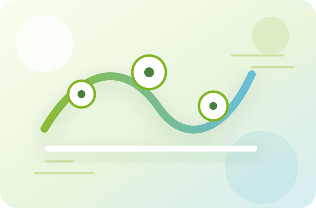

Research
Speech and music are two auditory signals of great significance to human beings. Speech transmits information, while music expresses emotion. We combine psychophysical testing, physiological recording (EEG and MEG), brain imaging (multi-modal MRI) and non-invasive neuromodulation (TMS and tES) to study how the brain understands speech and enjoys music.
Speech perception in adverse listening circumstances
We investigate the neural mechanisms supporting speech perception and comprehension when listening is difficult, such as in noise, competing speech, or degraded acoustic environments. A central goal is to clarify how multisensory integration, contextual expectations and predictive coding help listeners extract stable linguistic meaning from uncertain auditory input.

Life-span development of speech comprehension
We study how speech perception and comprehension change from childhood through adulthood and aging. By examining behavioral performance and neural responses across different age groups, we aim to understand how sensory, cognitive and language systems mature, adapt and compensate throughout the life span.
Musical structure, emotion and reward
We explore how the brain represents musical structure and transforms sound patterns into emotion and pleasure. This line of research asks how rhythm, melody, harmony and expectation interact with affective and reward-related neural systems to create meaningful and enjoyable musical experiences.
Musical training and brain plasticity
We examine how long-term musical training experience shapes brain plasticity. Our work considers how intensive auditory-motor practice may refine perceptual sensitivity, timing, memory and cross-modal coordination, and how these changes are reflected in functional and structural brain organization.
Brain organization principles for language
We investigate the organizational principles that govern language functions and related cognitive systems. This includes how distributed cortical networks coordinate speech sounds, meaning, syntax, attention and memory, and how these networks support flexible communication in real-world contexts.
Our work is supported by multiple agencies including the National Key Research and Development Program of China, the National Natural Science Fund for Outstanding Young Scholars and the Strategic Priority Research Program of Chinese Academy of Sciences.